Use a Problem-Solving Strategy
Approach Word Problems with a Positive Attitude
“If you think you can… or think you can’t… you’re right.”—Henry Ford
The world is full of word problems! Will my income qualify me to rent that apartment? How much punch do I need to make for the party? What size diamond can I afford to buy my girlfriend? Should I fly or drive to my family reunion?
How much money do I need to fill the car with gas? How much tip should I leave at a restaurant? How many socks should I pack for vacation? What size turkey do I need to buy for Thanksgiving dinner, and then what time do I need to put it in the oven? If my sister and I buy our mother a present, how much does each of us pay?
Now that we can solve equations, we are ready to apply our new skills to word problems. Do you know anyone who has had negative experiences in the past with word problems? Have you ever had thoughts like the student below?
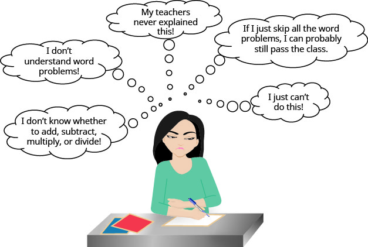
When we feel we have no control, and continue repeating negative thoughts, we set up barriers to success. We need to calm our fears and change our negative feelings.
Start with a fresh slate and begin to think positive thoughts. If we take control and believe we can be successful, we will be able to master word problems! Read the positive thoughts in Figure 2 and say them out loud.
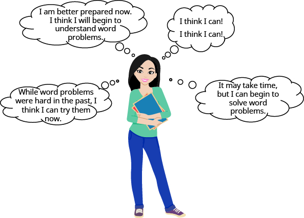
Think of something, outside of school, that you can do now but couldn’t do 3 years ago. Is it driving a car? Snowboarding? Cooking a gourmet meal? Speaking a new language? Your past experiences with word problems happened when you were younger—now you’re older and ready to succeed!
Use a Problem-Solving Strategy for Word Problems
We have reviewed translating English phrases into algebraic expressions, using some basic mathematical vocabulary and symbols. We have also translated English sentences into algebraic equations and solved some word problems. The word problems applied math to everyday situations. We restated the situation in one sentence, assigned a variable, and then wrote an equation to solve the problem. This method works as long as the situation is familiar and the math is not too complicated.
Now, we’ll expand our strategy so we can use it to successfully solve any word problem. We’ll list the strategy here, and then we’ll use it to solve some problems. We summarize below an effective strategy for problem solving.
Pilar bought a purse on sale for $18, which is one-half of the original price. What was the original price of the purse?
Solution
Solution
Step 1. Read the problem. Read the problem two or more times if necessary. Look up any unfamiliar words in a dictionary or on the internet.
- In this problem, is it clear what is being discussed? Is every word familiar?
Step 2. Identify what you are looking for. Did you ever go into your bedroom to get something and then forget what you were looking for? It’s hard to find something if you are not sure what it is! Read the problem again and look for words that tell you what you are looking for!
- In this problem, the words “what was the original price of the purse” tell us what we need to find.
Step 3. Name what we are looking for. Choose a variable to represent that quantity. We can use any letter for the variable, but choose one that makes it easy to remember what it represents.
- Let the original price of the purse.
Step 4. Translate into an equation. It may be helpful to restate the problem in one sentence with all the important information. Translate the English sentence into an algebraic equation.
Reread the problem carefully to see how the given information is related. Often, there is one sentence that gives this information, or it may help to write one sentence with all the important information. Look for clue words to help translate the sentence into algebra. Translate the sentence into an equation.
| Restate the problem in one sentence with all the important information. | 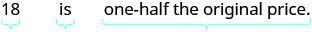 |
| Translate into an equation. |
Step 5. Solve the equation using good algebraic techniques. Even if you know the solution right away, using good algebraic techniques here will better prepare you to solve problems that do not have obvious answers.
| Solve the equation. | 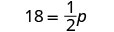 |
| Multiply both sides by 2. | 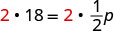 |
| Simplify. |
Step 6. Check the answer in the problem to make sure it makes sense. We solved the equation and found that which means “the original price” was $36.
- Does $36 make sense in the problem? Yes, because 18 is one-half of 36, and the purse was on sale at half the original price.
Step 7. Answer the question with a complete sentence. The problem asked “What was the original price of the purse?”
-
The answer to the question is: “The original price of the purse was $36.”
If this were a homework exercise, our work might look like this:
Pilar bought a purse on sale for $18, which is one-half the original price. What was the original price of the purse?
| Let the original price. | |
| 18 is one-half the original price. | |
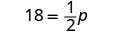 |
|
| Multiply both sides by 2. | 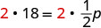 |
| Simplify. | |
| Check. Is $36 a reasonable price for a purse? | |
| Yes. | |
| Is 18 one half of 36? | |
| The original price of the purse was $36. |
Let’s try this approach with another example.
Ginny and her classmates formed a study group. The number of girls in the study group was three more than twice the number of boys. There were 11 girls in the study group. How many boys were in the study group?
Solution
Solution
| Step 1. Read the problem. | |
| Step 2. Identify what we are looking for. | How many boys were in the study group? |
| Step 3. Name. Choose a variable to represent the number of boys. | Let the number of boys. |
| Step 4. Translate. Restate the problem in one sentence with all the important information. | 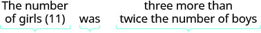 |
| Translate into an equation. | |
| Step 5. Solve the equation. | |
| Subtract 3 from each side. | |
| Simplify. | |
| Divide each side by 2. | |
| Simplify. | |
| Step 6. Check. First, is our answer reasonable? Yes, having 4 boys in a study group seems OK. The problem says the number of girls was 3 more than twice the number of boys. If there are four boys, does that make eleven girls? Twice 4 boys is 8. Three more than 8 is 11. | |
| Step 7. Answer the question. | There were 4 boys in the study group. |
Solve Number Problems
Now that we have a problem solving strategy, we will use it on several different types of word problems. The first type we will work on is “number problems.” Number problems give some clues about one or more numbers. We use these clues to write an equation. Number problems don’t usually arise on an everyday basis, but they provide a good introduction to practicing the problem solving strategy outlined above.
The difference of a number and six is 13. Find the number.
Solution
Solution
| Step 1. Read the problem. Are all the words familiar? | |
| Step 2. Identify what we are looking for. | the number |
| Step 3. Name. Choose a variable to represent the number. | Let the number. |
| Step 4. Translate. Remember to look for clue words like "difference... of... and..." | |
| Restate the problem as one sentence. | 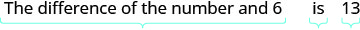 |
| Translate into an equation. | |
| Step 5. Solve the equation. | |
| Simplify. | |
| Step 6. Check. | |
| The difference of 19 and 6 is 13. It checks! | |
| Step 7. Answer the question. | The number is 19. |
The sum of twice a number and seven is 15. Find the number.
Solution
Solution
| Step 1. Read the problem. | |
| Step 2. Identify what we are looking for. | the number |
| Step 3. Name. Choose a variable to represent the number. | Let the number. |
| Step 4. Translate. | |
| Restate the problem as one sentence. | 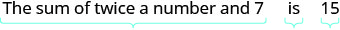 |
| Translate into an equation. | |
| Step 5. Solve the equation. | |
| Subtract 7 from each side and simplify. | |
| Divide each side by 2 and simplify. | |
| Step 6. Check. | |
| Is the sum of twice 4 and 7 equal to 15? | |
| Step 7. Answer the question. | The number is 4. |
Did you notice that we left out some of the steps as we solved this equation? If you’re not yet ready to leave out these steps, write down as many as you need.
Some number word problems ask us to find two or more numbers. It may be tempting to name them all with different variables, but so far we have only solved equations with one variable. In order to avoid using more than one variable, we will define the numbers in terms of the same variable. Be sure to read the problem carefully to discover how all the numbers relate to each other.
One number is five more than another. The sum of the numbers is 21. Find the numbers.
Solution
Solution
| Step 1. Read the problem. | ||
| Step 2. Identify what we are looking for. | We are looking for two numbers. | |
| Step 3. Name. We have two numbers to name and need a name for each. | ||
| Choose a variable to represent the first number. | Let number. | |
| What do we know about the second number? | One number is five more than another. | |
| number | ||
| Step 4. Translate. Restate the problem as one sentence with all the important information. | The sum of the 1st number and the 2nd number is 21. | |
| Translate into an equation. | 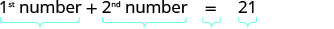 |
|
| Substitute the variable expressions. | ||
| Step 5. Solve the equation. | ||
| Combine like terms. | ||
| Subtract 5 from both sides and simplify. | ||
| Divide by 2 and simplify. | ||
| Find the second number, too. | ||
| Step 6. Check. | ||
| Do these numbers check in the problem? | ||
| Is one number 5 more than the other? | ||
| Is thirteen 5 more than 8? Yes. | ||
| Is the sum of the two numbers 21? | ||
| Step 7. Answer the question. | The numbers are 8 and 13. |
The sum of two numbers is negative fourteen. One number is four less than the other. Find the numbers.
Solution
Solution
| Step 1. Read the problem. | ||
| Step 2. Identify what we are looking for. | We are looking for two numbers. | |
| Step 3. Name. | ||
| Choose a variable. | Let number. | |
| One number is 4 less than the other. | number | |
| Step 4. Translate. | ||
| Write as one sentence. | The sum of the 2 numbers is negative 14. | |
| Translate into an equation. | 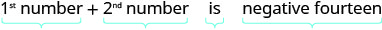 |
|
| Step 5. Solve the equation. | ||
| Combine like terms. | ||
| Add 4 to each side and simplify. | ||
| Simplify. | ||
| Step 6. Check. | ||
| Is −9 four less than −5? | ||
| Is their sum −14? | ||
| Step 7. Answer the question. | The numbers are −5 and −9. |
One number is ten more than twice another. Their sum is one. Find the numbers.
Solution
Solution
| Step 1. Read the problem. | ||
| Step 2. Identify what you are looking for. | We are looking for two numbers. | |
| Step 3. Name. | ||
| Choose a variable. | Let number. | |
| One number is 10 more than twice another. | number | |
| Step 4. Translate. | ||
| Restate as one sentence. | Their sum is one. | |
| The sum of the two numbers is 1. | ||
| Translate into an equation. | ||
| Step 5. Solve the equation. | ||
| Combine like terms. | ||
| Subtract 10 from each side. | ||
| Divide each side by 3. | ||
| Step 6. Check. | ||
| Is ten more than twice −3 equal to 4? | ||
| Is their sum 1? | ||
| Step 7. Answer the question. | The numbers are −3 and 4. |
Some number problems involve consecutive integers. Consecutive integers are integers that immediately follow each other. Examples of consecutive integers are:
Notice that each number is one more than the number preceding it. So if we define the first integer as n, the next consecutive integer is The one after that is one more than so it is which is
The sum of two consecutive integers is 47. Find the numbers.
Solution
Solution
| Step 1. Read the problem. | ||
| Step 2. Identify what you are looking for. | two consecutive integers | |
| Step 3. Name each number. | Let integer. | |
| next consecutive integer | ||
| Step 4. Translate. | ||
| Restate as one sentence. | The sum of the integers is 47. | |
| Translate into an equation. | ||
| Step 5. Solve the equation. | ||
| Combine like terms. | ||
| Subtract 1 from each side. | ||
| Divide each side by 2. | ||
| Step 6. Check. | ||
| Step 7. Answer the question. | The two consecutive integers are 23 and 24. |
Find three consecutive integers whose sum is
Solution
Solution
| Step 1. Read the problem. | ||
| Step 2. Identify what we are looking for. | three consecutive integers | |
| Step 3. Name each of the three numbers. | Let integer. | |
| 2nd consecutive integer | ||
| 3rd consecutive integer | ||
| Step 4. Translate. | ||
| Restate as one sentence. | The sum of the three integers is −42. | |
| Translate into an equation. | ||
| Step 5. Solve the equation. | ||
| Combine like terms. | ||
| Subtract 3 from each side. | ||
| Divide each side by 3. | ||
|
|
||
|
|
||
| Step 6. Check. | ||
| Step 7. Answer the question. | The three consecutive integers are −13, −14, and −15. |
Now that we have worked with consecutive integers, we will expand our work to include consecutive even integers and consecutive odd integers. Consecutive even integers are even integers that immediately follow one another. Examples of consecutive even integers are:
Notice each integer is 2 more than the number preceding it. If we call the first one n, then the next one is The next one would be or
Consecutive odd integers are odd integers that immediately follow one another. Consider the consecutive odd integers 77, 79, and 81.
Does it seem strange to add 2 (an even number) to get from one odd integer to the next? Do you get an odd number or an even number when we add 2 to 3? to 11? to 47?
Whether the problem asks for consecutive even numbers or odd numbers, you don’t have to do anything different. The pattern is still the same—to get from one odd or one even integer to the next, add 2.
Find three consecutive even integers whose sum is 84.
Solution
Solution
| Step 1. Read the problem. | |
| Step 2. Identify what we are looking for. | three consecutive even integers |
| Step 3. Name the integers. | Let even integer.
consecutive even integer consecutive even integer |
| Step 4. Translate. | |
| Restate as one sentence. | The sume of the three even integers is 84. |
| Translate into an equation. | |
| Step 5. Solve the equation. | |
| Combine like terms. | |
| Subtract 6 from each side. | |
| Divide each side by 3. | |
| Step 6. Check. | |
| Step 7. Answer the question. | The three consecutive integers are 26, 28, and 30. |
A married couple together earns $110,000 a year. The wife earns $16,000 less than twice what her husband earns. What does the husband earn?
Solution
Solution
| Step 1. Read the problem. | ||
| Step 2. Identify what we are looking for. | How much does the husband earn? | |
| Step 3. Name. | ||
| Choose a variable to represent the amount the husband earns. |
Let the amount the husband earns. | |
| The wife earns $16,000 less than twice that. | the amount the wife earns. | |
| Step 4. Translate. | Together the husband and wife earn $110,000. | |
| Restate the problem in one sentence with all the important information. |
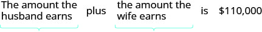 |
|
| Translate into an equation. | ||
| Step 5. Solve the equation. | h + 2h − 16,000 = 110,000 | |
| Combine like terms. | 3h − 16,000 = 110,000 | |
| Add 16,000 to both sides and simplify. | 3h = 126,000 | |
| Divide each side by 3. | h = 42,000 | |
| $42,000 amount husband earns | ||
| 2h − 16,000 amount wife earns | ||
| 2(42,000) − 16,000 | ||
| 84,000 − 16,000 | ||
| 68,000 | ||
| Step 6. Check. | ||
| If the wife earns $68,000 and the husband earns $42,000 is the total $110,000? Yes! | ||
| Step 7. Answer the question. | The husband earns $42,000 a year. |
Key Concepts
-
Problem-Solving Strategy
- Read the problem. Make sure all the words and ideas are understood.
- Identify what we are looking for.
- Name what we are looking for. Choose a variable to represent that quantity.
- Translate into an equation. It may be helpful to restate the problem in one sentence with all the important information. Then, translate the English sentence into an algebra equation.
- Solve the equation using good algebra techniques.
- Check the answer in the problem and make sure it makes sense.
- Answer the question with a complete sentence.
-
Consecutive Integers
Consecutive integers are integers that immediately follow each other.
Consecutive even integers are even integers that immediately follow one another.
Consecutive odd integers are odd integers that immediately follow one another.
Practice Makes Perfect
Use the Approach Word Problems with a Positive Attitude
In the following exercises, prepare the lists described.
List five positive thoughts you can say to yourself that will help you approach word problems with a positive attitude. You may want to copy them on a sheet of paper and put it in the front of your notebook, where you can read them often.
Solution
Answers will vary
List five negative thoughts that you have said to yourself in the past that will hinder your progress on word problems. You may want to write each one on a small piece of paper and rip it up to symbolically destroy the negative thoughts.
Use a Problem-Solving Strategy for Word Problems
In the following exercises, solve using the problem solving strategy for word problems. Remember to write a complete sentence to answer each question.
Two-thirds of the children in the fourth-grade class are girls. If there are 20 girls, what is the total number of children in the class?
Solution
30
Three-fifths of the members of the school choir are women. If there are 24 women, what is the total number of choir members?
Zachary has 25 country music CDs, which is one-fifth of his CD collection. How many CDs does Zachary have?
Solution
125
One-fourth of the candies in a bag of M&M’s are red. If there are 23 red candies, how many candies are in the bag?
There are 16 girls in a school club. The number of girls is four more than twice the number of boys. Find the number of boys.
Solution
6
There are 18 Cub Scouts in Pack 645. The number of scouts is three more than five times the number of adult leaders. Find the number of adult leaders.
Huong is organizing paperback and hardback books for her club’s used book sale. The number of paperbacks is 12 less than three times the number of hardbacks. Huong had 162 paperbacks. How many hardback books were there?
Solution
58
Jeff is lining up children’s and adult bicycles at the bike shop where he works. The number of children’s bicycles is nine less than three times the number of adult bicycles. There are 42 adult bicycles. How many children’s bicycles are there?
Philip pays $1,620 in rent every month. This amount is $120 more than twice what his brother Paul pays for rent. How much does Paul pay for rent?
Solution
$750
Marc just bought an SUV for $54,000. This is $7,400 less than twice what his wife paid for her car last year. How much did his wife pay for her car?
Laurie has $46,000 invested in stocks and bonds. The amount invested in stocks is $8,000 less than three times the amount invested in bonds. How much does Laurie have invested in bonds?
Solution
$13,500
Erica earned a total of $50,450 last year from her two jobs. The amount she earned from her job at the store was $1,250 more than three times the amount she earned from her job at the college. How much did she earn from her job at the college?
Solve Number Problems
In the following exercises, solve each number word problem.
The sum of a number and eight is 12. Find the number.
Solution
4
The sum of a number and nine is 17. Find the number.
The difference of a number and 12 is three. Find the number.
Solution
15
The difference of a number and eight is four. Find the number.
The sum of three times a number and eight is 23. Find the number.
Solution
5
The sum of twice a number and six is 14. Find the number.
The difference of twice a number and seven is 17. Find the number.
Solution
12
The difference of four times a number and seven is 21. Find the number.
Three times the sum of a number and nine is 12. Find the number.
Solution
Six times the sum of a number and eight is 30. Find the number.
One number is six more than the other. Their sum is 42. Find the numbers.
Solution
18, 24
One number is five more than the other. Their sum is 33. Find the numbers.
The sum of two numbers is 20. One number is four less than the other. Find the numbers.
Solution
8, 12
The sum of two numbers is 27. One number is seven less than the other. Find the numbers.
The sum of two numbers is One number is nine more than the other. Find the numbers.
Solution
The sum of two numbers is One number is 35 more than the other. Find the numbers.
The sum of two numbers is One number is 94 less than the other. Find the numbers.
Solution
The sum of two numbers is One number is 62 less than the other. Find the numbers.
One number is 14 less than another. If their sum is increased by seven, the result is 85. Find the numbers.
Solution
32, 46
One number is 11 less than another. If their sum is increased by eight, the result is 71. Find the numbers.
One number is five more than another. If their sum is increased by nine, the result is 60. Find the numbers.
Solution
23, 28
One number is eight more than another. If their sum is increased by 17, the result is 95. Find the numbers.
One number is one more than twice another. Their sum is Find the numbers.
Solution
One number is six more than five times another. Their sum is six. Find the numbers.
The sum of two numbers is 14. One number is two less than three times the other. Find the numbers.
Solution
4, 10
The sum of two numbers is zero. One number is nine less than twice the other. Find the numbers.
The sum of two consecutive integers is 77. Find the integers.
Solution
38, 39
The sum of two consecutive integers is 89. Find the integers.
The sum of two consecutive integers is Find the integers.
Solution
The sum of two consecutive integers is Find the integers.
The sum of three consecutive integers is 78. Find the integers.
Solution
25, 26, 27
The sum of three consecutive integers is 60. Find the integers.
Find three consecutive integers whose sum is
Solution
Find three consecutive integers whose sum is
Find three consecutive even integers whose sum is 258.
Solution
84, 86, 88
Find three consecutive even integers whose sum is 222.
Find three consecutive odd integers whose sum is 171.
Solution
55, 57, 59
Find three consecutive odd integers whose sum is 291.
Find three consecutive even integers whose sum is
Solution
Find three consecutive even integers whose sum is
Find three consecutive odd integers whose sum is
Solution
Find three consecutive odd integers whose sum is
Everyday Math
Sale Price Patty paid $35 for a purse on sale for $10 off the original price. What was the original price of the purse?
Solution
$45
Sale Price Travis bought a pair of boots on sale for $25 off the original price. He paid $60 for the boots. What was the original price of the boots?
Buying in Bulk Minh spent $6.25 on five sticker books to give his nephews. Find the cost of each sticker book.
Solution
$1.25
Buying in Bulk Alicia bought a package of eight peaches for $3.20. Find the cost of each peach.
Price before Sales Tax Tom paid $1,166.40 for a new refrigerator, including $86.40 tax. What was the price of the refrigerator?
Solution
$1080
Price before Sales Tax Kenji paid $2,279 for a new living room set, including $129 tax. What was the price of the living room set?
Writing Exercises
What has been your past experience solving word problems?
Solution
answers will vary
When you start to solve a word problem, how do you decide what to let the variable represent?
What are consecutive odd integers? Name three consecutive odd integers between 50 and 60.
Solution
Consecutive odd integers are odd numbers that immediately follow each other. An example of three consecutive odd integers between 50 and 60 would be 51, 53, and 55.
What are consecutive even integers? Name three consecutive even integers between and
Self Check
ⓐ After completing the exercises, use this checklist to evaluate your mastery of the objectives of this section.
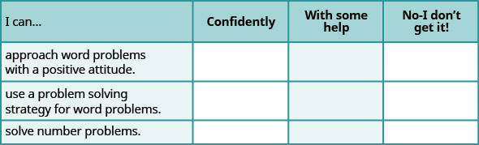
ⓑ If most of your checks were:
…confidently. Congratulations! You have achieved your goals in this section! Reflect on the study skills you used so that you can continue to use them. What did you do to become confident of your ability to do these things? Be specific!
…with some help. This must be addressed quickly as topics you do not master become potholes in your road to success. Math is sequential—every topic builds upon previous work. It is important to make sure you have a strong foundation before you move on. Whom can you ask for help? Your fellow classmates and instructor are good resources. Is there a place on campus where math tutors are available? Can your study skills be improved?
…no—I don’t get it! This is critical and you must not ignore it. You need to get help immediately or you will quickly be overwhelmed. See your instructor as soon as possible to discuss your situation. Together you can come up with a plan to get you the help you need.